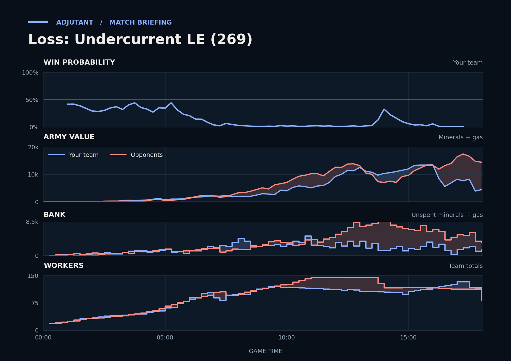

Result inferred from higher terminal team supply because no explicit replay result was available.
Loss
Cached narration uses different analysis inputs (facts, engine notes, prompts or model settings). It has not been regenerated for this report.
Loss. You lost because the 17:06 trade across Scallop's bases went against you, mostly to llllllllllll's Liberators.
Why
16:00–16:32: TakeTheTip's army hit llllllllllll's fifth without Scallop and lost about 9,100, which left the duo behind going in.
16:00–18:00: Unseen: llllllllllll's Barracks ran 77% busy, refilling their army.
17:06–18:03: llllllllllll's Liberators, Marines, Marauders and Siege Tanks killed 46 SCVs, and Scallop typed gg.
Try next game
TakeTheTip: Before attacking at near max supply, move out only when Scallop's army is on your screen or minimap.
Scallop: When a base flashes red on the minimap, press spacebar to jump there and pull the SCVs. Check: you are looking at that base within 6 s of the alert.

Written by claude-sonnet-5-5 from a different set of analysis inputs.
Current engine analysis: turning points, whole game, habits
Debrief
Loss. Review 14:08–14:20: a roughly even trade (1,325 lost, 1,050 killed) left you worse off.
Team MMR 3722 vs 3977 against INNoVatioN (Terran), llllllllllll (Terran). Starting win chance 42%.
Try next game
TakeTheTip: answer Siege Tanks with Brood Lords/Mutalisks/Ravagers. Check: at least 8 of those within two minutes of their first Siege Tank.
Scallop: when you see cloaking tech or the first Banshee, get a Missile Turret per base (scans for fights); check: losses to Banshees under 500.
TakeTheTip: by 6:11 keep a few units or a defensive structure at the mineral line and pull workers the moment the attack lands; check: fewer than 5 workers lost.
Turning points
6:28–8:06: TakeTheTip lost 24 Drones to Hellions. Win chance 15% to 2%.
TakeTheTip lost 24 Drones between 6:41 and 7:02, to Hellions (24 kills).
You killed 17 enemy workers (17 of them INNoVatioN's), with Banshees (17 kills).
Fighting: you lost 2,300 of army at their bases and killed 2,550 of theirs. Going in, your armies were worth 1,775 against their 2,225.
Your losses: 4 Banshees, 25 Zerglings, 5 Hellions, 1 Queen; killed mostly by Hellions (23 kills), Marines (7).
Their losses: 10 Hellions, 17 Marines, 2 Cyclones, 1 Medivac.
What moved the win chance: army -4%
Try: TakeTheTip: by 6:11 keep a few units or a defensive structure at the mineral line and pull workers the moment the attack lands; check: fewer than 5 workers lost.
12:57–14:05: you won a fight (14,475 killed, 8,550 lost). Win chance 2% to 16%.
You killed 34 enemy workers (34 of them llllllllllll's), with Ultralisks (29 kills), Banelings (3), Hydralisks (2).
Fighting: you lost 7,650 of army and killed 10,425 of theirs. Going in, your armies were worth 12,650 against their 13,175.
Your losses: 59 Zerglings, 3 Ultralisks, 7 Vikings, 5 Liberators; killed mostly by Marines (44 kills), Siege Tanks (18).
In your earlier games, when you were 3,975+ ahead on army traded by 15:00, you won 68% (25 games) vs 45% otherwise (89 games).
What moved the win chance: army +10%, economy +7%, tech +6%
14:08–14:20: a roughly even trade (1,325 lost, 1,050 killed) left you worse off. Win chance 33% to 10%.
Fighting: you lost 1,225 of army and killed 1,050 of theirs. Going in, your armies were worth 9,275 against their 7,500.
Your losses: 3 Siege Tanks, 2 Vikings; killed mostly by Siege Tanks (2 kills), Thors (2).
Their losses: 2 Siege Tanks, 1 Thor.
What moved the win chance: army -21%, tech -2%
Across the whole game
Enemy Siege Tanks (they made 36) destroyed 11,275 of your value (53 Zerglings, 23 SCVs, 8 Hellions). Counters built after they first struck at 4:43: Scallop made 14 Liberators, 6 Banshees; TakeTheTip made none.
Enemy Thors (they made 15) destroyed 10,450 of your value (42 Zerglings, 12 Vikings, 7 Liberators). Counters built after they first struck at 13:00: Scallop made 12 Siege Tanks; TakeTheTip made 148 Zerglings.
TakeTheTip lost 22 Ultralisks (10,450) over the game, mostly to Thors (7), Marauders (5).
Enemy Banshees (they made 8) destroyed 3,350 of your value (6 Siege Tanks, 3 Drones, 3 Hydralisks). Counters built after they first struck at 16:08: Scallop made 4 Vikings, 1 Missile Turret; TakeTheTip made 8 Hydralisks.
Cloaked Banshees destroyed 1,750 of Scallop's value from 16:50; a minute later Scallop had 1 detectors.
Compared with your other games
Scallop was banking 697 at 6:00; in your wins usually 435. Across your earlier games, when it was like this you won 24% (58 games) vs 54% otherwise (166 games).
Engine debrief-v3-0.7. Losses count only units killed by an enemy. Win chance comes from a model trained on your earlier games.
Earlier replay bookmarks
Earlier moments to revisit, considering both teammates. Each row groups nearby losses. Engine and chart windows may include other simultaneous losses. Values are minerals + gas. These bookmarks do not grade the decisions.
Local losses: Scallop lost 1 Reaper (100); TakeTheTip lost 29 Zerglings (725); duo total 825; opponents lost 1 Siege Tank, 5 Marines, 1 SCV, +1 others (675)
Local losses: Scallop lost 4 Banshees, 5 Hellions (1,500); opponents lost 17 SCVs, 2 Cyclones, +10 others (1,850)
Other recorded losses in this window: TakeTheTip lost 12 Zerglings, 4 Drones (500); opponents lost 6 Hellions, 3 Marines (750)
Local losses: Scallop lost 6 Hellions, 2 SCVs (700); opponents lost 2 Siege Tanks, 9 Marines (1,000)
Other recorded losses in this window: TakeTheTip lost 16 Zerglings (400)
Replay map
◎ Historical player start · ◇ Resource cluster · ■ Completed grounded hall · □ Unfinished hall · ✕ Recorded hall ending Dashed rings show recorded events during the selected interval, not simultaneous live state. Symbols and player labels accompany colors.
Hall state
Unplaced halls
Recorded events and source evidenceExact map, registration and resource-site sources
Positive resource-site occupancy is recorded hall presence. Mining, vision, routes, local army availability and map control are unknown. The MMR-conditioned model estimate is unchanged. This panel cannot establish what caused a probability drop.
Older V2 evidence cards
Evidence-first cards are generated independently from the predictive model. Each card separates replay evidence, interpretation, past-only comparison, and an adjustment to test.
Abstained
No supported V2 insight
No supported window
Interpretation
No deterministic temporal pattern met the evidence and persistence checks for an actionable card.
Adjustment to test
No adjustment supported.
Confidence: AbstainedVisibility: replay_state
Evidence chain and comparison
Evidence
No qualifying factual evidence was retained.
Past-only comparison
No past-only comparison was used because no qualifying pattern was detected. Support: 0. Comparable replay IDs: None retained.
Provenance
No additional provenance was retained.
No qualifying deterministic V2 pattern was detected in the available replay evidence.
P(win) is an MMR-conditioned model estimate. Economy and Army Position compare the duo to historical positions at similar game times; they are not model-contribution lanes.
Raw State Comparisons
Observed tracker values, not race-normalized scores. Duo and opponent totals are shown alongside TakeTheTip and Scallop so the normalized lanes above can be checked against the underlying army, economy and bank quantities.
Observed Combat Outcomes
Positive bars favor the duo; negative bars favor the opponents. Each bar summarizes the preceding 15 seconds at a sampled boundary; selected-window summaries exclude future events. These observations do not prove the correct alternative decision.
Factual Replay Timeline
These milestones are replay facts synchronized to the selected window. They are context, not claims about what caused the result.